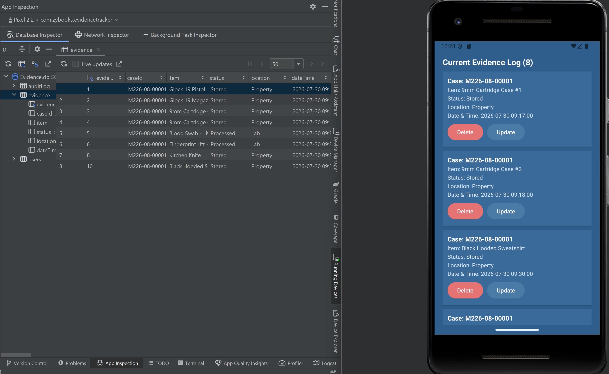
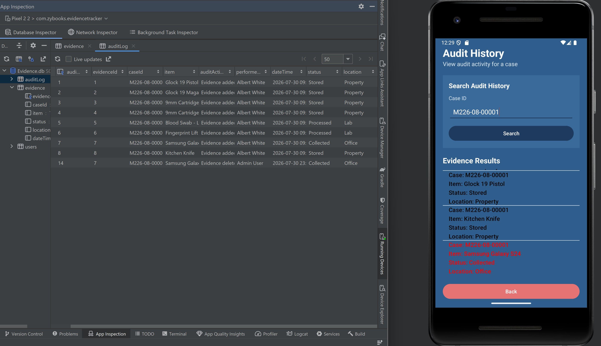
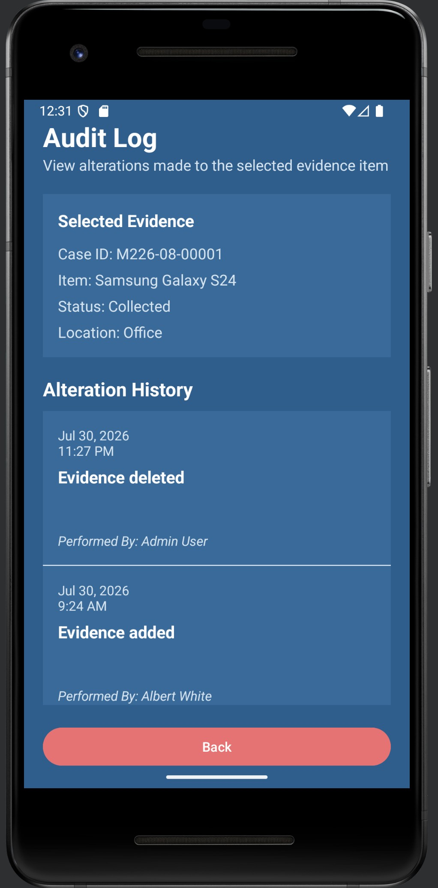

Enhancement Three
Databases
Artifact Overview
This artifact is my Evidence Tracker Android application, originally developed during CS 360: Mobile Architecture and Programming using Android Studio, Java, XML layouts, and a local SQLite database. Although the original application successfully stored evidence records, it maintained only the current version of each record. Whenever evidence was updated, the previous information was permanently overwritten. This enhancement redesigned the database to preserve historical information while improving data integrity, accountability, and long-term record management.
Why I Selected This Artifact
I selected this artifact because databases serve as the foundation of nearly every software application. Evidence management depends on reliable, organized, and traceable information, making database design particularly important. Enhancing the SQLite database allowed me to apply relational database concepts while creating functionality that better reflects professional evidence management systems.
The original application successfully stored evidence information using SQLite but permanently replaced previous values whenever a record was modified. This prevented investigators from reviewing historical evidence activity and limited accountability. These limitations created an opportunity to redesign the database while preserving the application's existing functionality.
Database Enhancements
This enhancement introduced an Audit Log table that preserves historical evidence activity instead of permanently overwriting information. Additional database methods retrieve audit records and present them through a dedicated Android interface, allowing users to review additions, updates, and deletions performed throughout the life of an investigation.
Evidence Database Redesign
The original SQLite database stored evidence information in a single table that supported standard create, read, update, and delete operations. During this enhancement, the database was redesigned to support historical tracking while maintaining compatibility with the existing Android application. Figure 1 illustrates the current evidence records alongside the corresponding SQLite database table.

Audit Log Database
One of the most significant improvements was the introduction of an Audit Log table. Rather than permanently overwriting evidence information, significant events are recorded together with the case number, evidence item, audit action, user responsible, timestamp, status, and location. This redesign preserves historical information while maintaining current evidence separately, improving both data integrity and accountability.

Audit Log Interface
To complement the redesigned database, I developed an Audit Log interface that retrieves historical information from the Audit Log table and presents it in a readable format. Investigators can review evidence additions, updates, and deletions together with the user responsible for each action. Providing access to historical records demonstrates how the redesigned database supports accountability throughout an investigation.

Enhancement Results
Collectively, these database enhancements transformed the original application from a system that maintained only current evidence information into one capable of preserving historical audit records. The redesigned SQLite database improves traceability, supports accountability, and better reflects how evidence information is managed throughout an investigation. Although the application continues to use SQLite, the redesigned schema provides a stronger foundation for future enhancements while maintaining compatibility with the existing Android architecture.
Reflection
What I Learned
This enhancement demonstrated that effective database design extends beyond storing information correctly. Preserving historical data, maintaining integrity, and designing relationships that support future growth are equally important considerations. Developing the Audit Log reinforced that database changes must protect existing functionality while introducing new capabilities that improve the overall application.
One of the greatest challenges involved redesigning the database without disrupting the application's existing workflows. Modifications to the database required corresponding updates to Android activities, RecyclerView adapters, model classes, and database helper methods. Thorough testing confirmed that evidence creation, updating, retrieval, and audit history continued to function correctly after the redesign.
Course Outcome Reflection
This enhancement primarily demonstrates Course Outcomes One, Two, Four, and Five . It strengthened my understanding of relational database design, SQLite implementation, data integrity, and preserving historical information while maintaining application performance. The redesign also reinforced the importance of developing database solutions that support long-term organizational needs rather than simply storing current information.
Overall, this enhancement transformed the Evidence Tracker from an application that stored only the latest evidence information into a more realistic evidence management system capable of preserving historical records. The project strengthened my database design, Android development, software testing, and software engineering skills while producing a more maintainable and professional application.